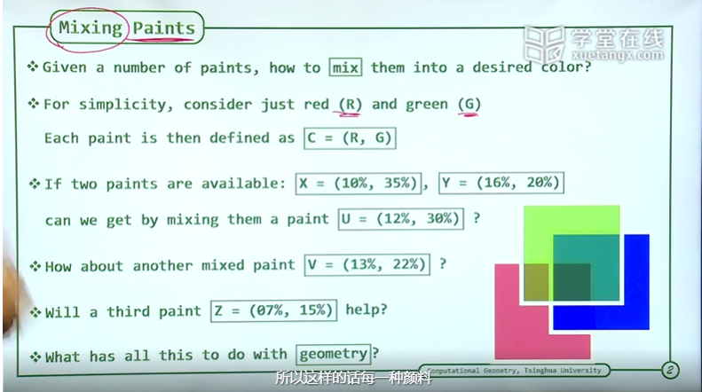
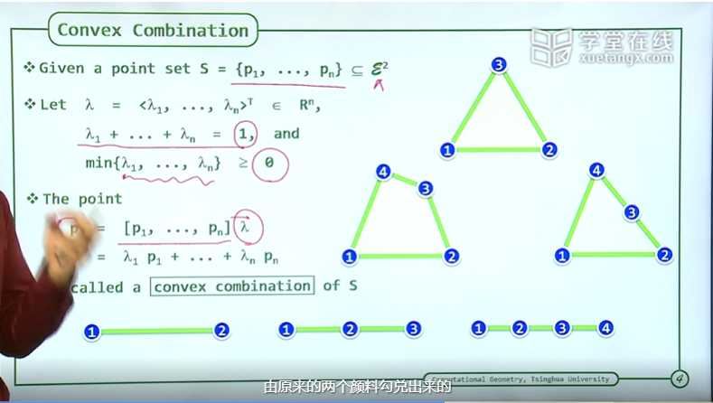

一、凸性质 (Convexity)
1. 引入
- 颜色混合

我们可以使用几种只包含R，G的颜色来进行混合从而得到第三种颜色，但是第三种颜色是否可以用这几种颜色勾兑，我们只有从数学上进行尝试，下面我们使用代码进行处理。
1 | def cal_porp_two(color1, color2, resultColor): |
也即是通过穷举混合比例来进行判断我们是否可以通过混合得到第三种颜色，从代码也可以看出这种方法的时间复杂度是非常高的，三种的时间复杂度为
接下来我们可以通过几何的方式来对数据进行解释，来尝试降低时间复杂度
- 几何解释 (颜色空间)

将上述的颜色转换为几何上的坐标，从图上可以看出对于使用两种颜色就可以勾兑出第三种颜色的情况，在几何上第三种颜色必定会在两种颜色之间；对于需要使用三种颜色才能勾兑出的颜色那么勾兑出的颜色也必须在三种颜色组成的三角形内部或者三角形的边上。
通过上述转换，我们就将从三种颜色的随意组合问题
另外，我们知道并非每一种颜色都有资格作为颜色空间的”基颜色”而存在的，这个就像我们在笛卡尔坐标系中的解释是一样的，在二维笛卡尔坐标系中的每个点都可以使用两个基向量进行“勾兑”出来，所以在这个颜色混合的问题中我们也要提取出“基颜色”。从笛卡尔坐标系中我们得知基向量都是相互垂直不存在相关关系的一组向量而构成的，所以这里的“基颜色”也是互不相关，也即无法通过组合而得到的颜色而构成的，在凸问题中我们称这种“基颜色”为凸无关，而能够被组合出来的颜色所代表的点我们称之为凸相关。
- 凸组合 (Covex Combination)

这里给出了凸组合的概念。凸组合需要满足两个条件
- 组合系数需要大于等于0
- 组合系数之和等于1
这里无需给出更多的解释，从几何解释中我们就可以理解为什么这样定义。
凸相关的点其实并不被我们在凸的性质中需要，从几何解释中我们可以看到这些点被包裹在凸的内部并不会对我们处理问题给出任何的优势。
二、极点 (Extreme Points)
1. 什么是极点
2. 如何判断极点
2.1 穷举三角形做In-Triangle Test
三、极边 (Extreme Edges)
四、增量构建 (Incremental Construction)
五、Javis March
六、Lower Bound
七、Graham Scan: Alogrithm
八、Graham Scan: Example
九、Graham Scan: Correctness
十、Graham Scan: Analysis
十一、Divide-And-Conquer
十二、Wrap-up
Convex Hull
https://cracknum.github.io/2025/05/25/Computational Geometry/Convex Hull/index.html